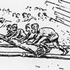
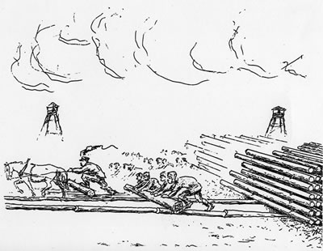
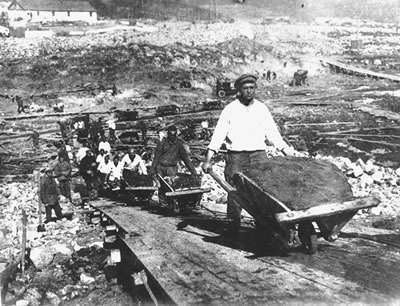
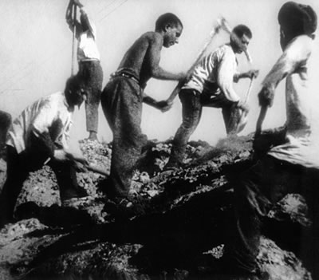
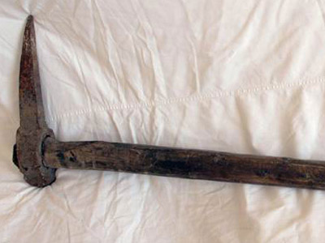
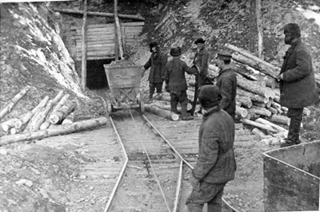
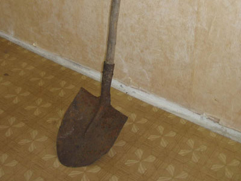

Online Exhibit → Stalin’s Gulag
Work in the Gulag

GULAG was the acronym for the Main Administration of Corrective Labor Camps.
Gulag prisoners could work up to 14 hours per day. Typical Gulag labor was exhausting physical work. Toiling sometimes in the most extreme climates, prisoners might spend their days felling trees with handsaws and axes or digging at frozen ground with primitive pickaxes. Others mined coal or copper by hand, often suffering painful and fatal lung diseases from inhalation of ore dust. Prisoners were barely fed enough to sustain such difficult labor.


Balany (Logs, Inferior to a Horse)
“After eleven and a half hours of labor (not including time needed to assign a task, receive tools and give them back), Professor Kozyrev commented: ‘How far Man is still from perfection. Just to think how many people and what minds are needed to do a job of one horse.’”
“In this case the four incompetent workers were: Epifanov, who was until the Great Purge of 1937 a professor of Marxism-Leninism in the Academy of Mining in Moscow; Colonel Ivanov, a chief of a major Red Army division; Professor Kozyrev, director of research at the Pulkovo Space Observatory in Leningrad; and myself, a secret agent of the Comintern.”
Drawing and memoir excerpt by Jacques Rossi.
Courtesy of Regina Gorzkowski-Rossi.In the eyes of the authorities, the prisoners had almost no value. Those who died of hunger, cold, and hard labor were replaced by new prisoners because the system could always find more people to replenish the labor camps.


Prisoners work at Belbaltlag, a Gulag camp for building the White Sea-Baltic Sea Canal .
From the 1932 documentary film, Baltic to White Sea Water Way. Courtesy of the Central Russian Film and Photo Archive.

Built between 1931 and 1933, the White Sea-Baltic Sea Canal was the first massive construction project of the Gulag. Over 100,000 prisoners dug a 141-mile canal with few tools other than simple pickaxes, shovels, and makeshift wheelbarrows in just 20 months. Initially viewed as a great success and celebrated in a volume published both in the Soviet Union and the United States, the canal turned out to be too narrow and too shallow to carry most sea vessels. Many prisoners died during construction.


Prisoners work at Belbaltlag, a Gulag camp for building the White Sea-Baltic Sea Canal.
From the 1932 documentary film, Baltic to White Sea Water Way. Courtesy of the Central Russian Film and Photo Archive.

With such picks, millions of Gulag prisoners manually unearthed rocks and dug frozen ground during the massive Gulag projects in the 1930s and 1940s.
Courtesy of the Gulag Museum at Perm-36.Kolyma was a name that struck fear into the Gulag prisoner. Reputedly the coldest inhabited place on the planet, prisoners spoke of Kolyma as a place where 12 months were winter and all the rest summer. Kolyma was so remote that it could not be reached by an overland route. Prisoners traveled by train across the length of the Soviet Union only to spend up to several months on the Pacific coast waiting for the few months each year when the waterways were free of ice. Then, they boarded ships for their trip past Japan and up the Kolyma River to their gold-mining destination. Surviving Kolyma was more difficult than any other Gulag locale.


Prisoners mine gold at Kolyma, the most notorious Gulag camp in extreme northeastern Siberia.
From the 1934 documentary film Kolyma. Courtesy of the Central Russian Film and Photo Archive.

This shovel was found in one of the Gulag camps in remote Kolyma. It was one of many tools sent by the United States government to the Soviet Union during World War II. These items often found their way to the Gulag camps.
Courtesy of the Gulag Museum at Perm-36.Online Exhibit | Reflections | Traveling Exhibit | Teacher Resources | About
© 2006–2021, Center for History and New Media, George Mason University.